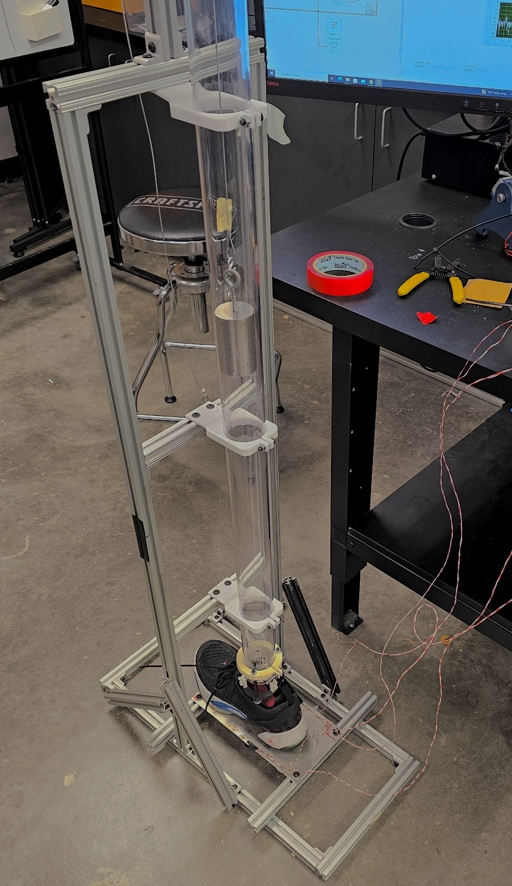
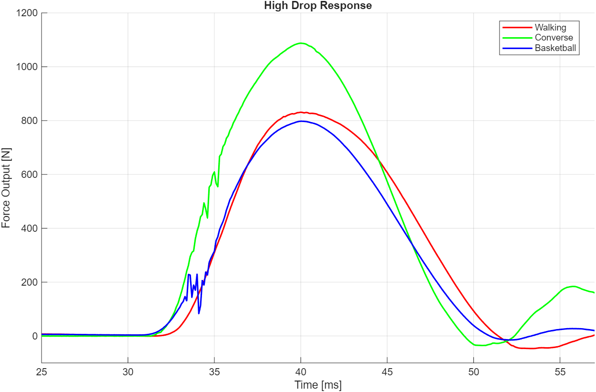
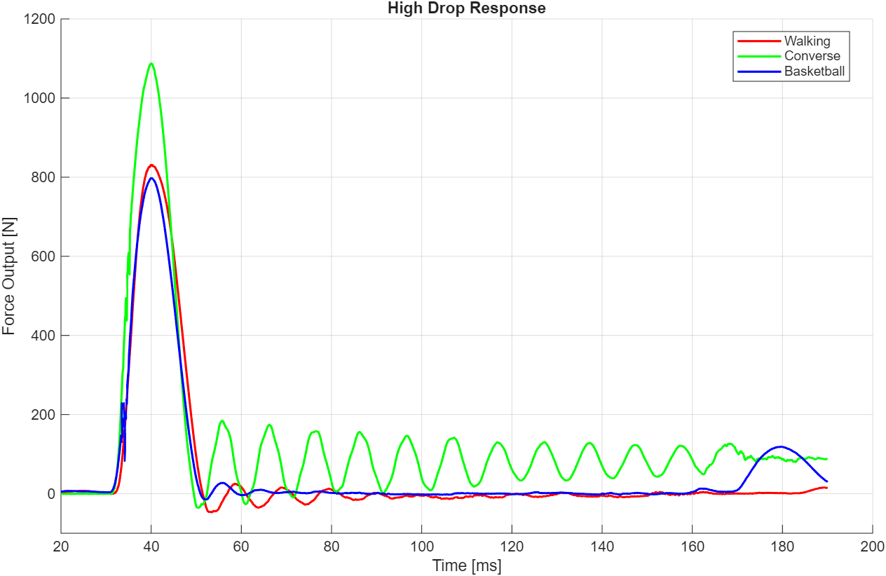

Overview
Designed and instrumented a force plate system to evaluate impact attenuation in footwear using controlled drop testing. Compared three shoe types (Converse, walking shoes, and basketball shoes) by analyzing force–time response and impulse under varying impact energies.
Engineering Approach
- Custom force plate using aluminum beam with bonded strain gauges
- Full Wheatstone bridge configuration for maximum sensitivity
- Data acquisition via NI-9218 at 10 kHz sampling rate
- Drop tower testing across three energy levels: 4.9 J, 7.48 J, 9.95 J
- Signal processing to extract peak force and impulse
System Design
The force plate consisted of a 6" × 12" aluminum plate (0.125" thick) instrumented with four strain gauges arranged in a full Wheatstone bridge. Gauges were positioned symmetrically about the neutral axis to maximize sensitivity to bending strain during impact loading.
The system was calibrated using known masses (0–8.6 kg), producing a linear force–voltage relationship with R² ≈ 0.99, enabling accurate conversion of voltage signals into force measurements.

Key Engineering Insights
Impact Attenuation
Footwear with increased cushioning significantly reduced peak force and impulse. Across all energy levels, Converse shoes consistently produced the highest loads, while basketball shoes demonstrated the best energy dissipation at high impact energies.
Quantitative Results
At the highest energy level (9.95 J):
- Converse: 10.98 Ns impulse
- Walking shoe: 9.16 Ns impulse
- Basketball shoe: 8.25 Ns impulse
This represents a ~25% reduction in transmitted impulse between minimal and high-cushion designs.

Transient Response
Time-domain analysis revealed distinct damping behavior:
- Converse: Large oscillations, poor damping
- Walking shoes: Moderate damping
- Basketball shoes: Rapid energy dissipation

Failure Observation
At the highest energy test, insufficient energy absorption in the Converse configuration caused permanent deformation of the aluminum plate, demonstrating how poor damping transfers load to the underlying structure.
Key Takeaways
- Force plate instrumentation enables high-resolution transient force measurement
- Wheatstone bridge configuration significantly improves strain sensitivity
- Impulse is a critical metric for evaluating injury risk
- Material and geometric design directly influence energy dissipation
- Poor damping can shift loads to structural components, causing failure